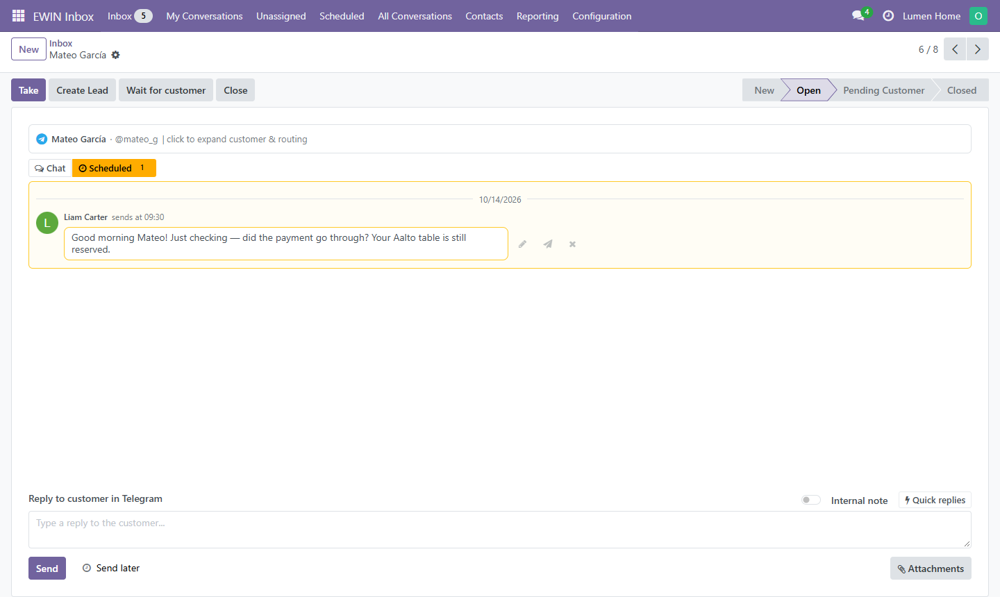
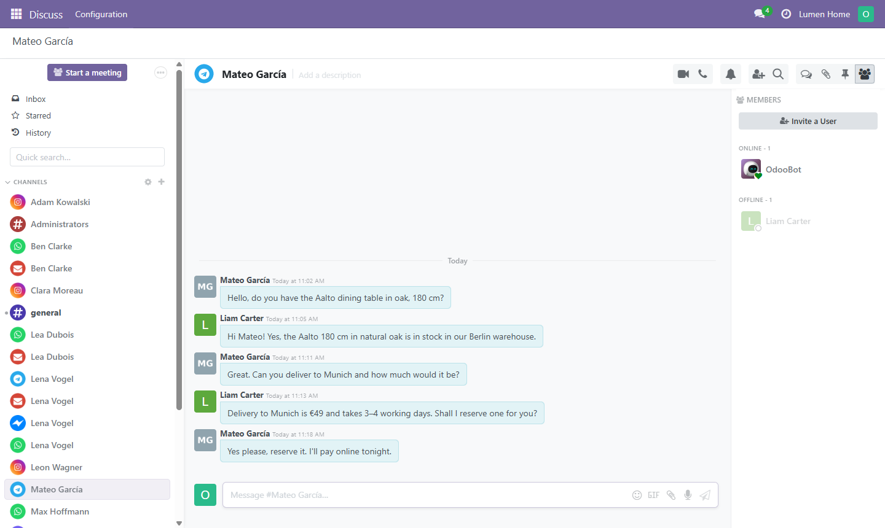

<section class="container" style="color:#24243a; font-size:16px">
  <div class="row justify-content-center">
    <div class="col-lg-10">
      <h1 class="mt-4 mb-2" style="color:#24243a; font-weight:700; font-size:40px">EWIN Inbox</h1>
      <p class="lead mb-3" style="color:#5f5f7a">Omnichannel customer inbox for Odoo 18. Answer Telegram, WhatsApp, Email, Instagram, Messenger, Viber and Live Chat from one Odoo-native screen, linked to your contacts and mirrored into Discuss.</p>
      <div class="mb-4"><span class="badge badge-pill badge-dark mr-1" style="font-size:13px; padding:6px 12px">Odoo 18</span><span class="badge badge-pill badge-primary mr-1" style="font-size:13px; padding:6px 12px">LGPL-3</span><span class="badge badge-pill badge-info mr-1" style="font-size:13px; padding:6px 12px">Free</span></div>
      
      <div class="text-center my-4"><p class="mt-2" style="font-size:14px; color:#5f5f7a">Every channel in one conversation list, with operator, team, state and priority.</p></div><h3 class="mt-5 mb-3" style="color:#3d34bd; font-weight:700; border-bottom:2px solid #e7e5f7; padding-bottom:8px">One inbox for every channel</h3><ul style="font-size:16px; color:#24243a"><li class="mb-2">Telegram, WhatsApp, Email, Instagram, Messenger, Viber and Odoo Live Chat in one conversation list, with the same tools whatever the channel</li><li class="mb-2">Two-way text and media: photos, documents, voice, video, stickers, where the channel carries them</li><li class="mb-2">Each customer matched to an Odoo contact; the same person writing again lands in the same contact and the same open conversation, no duplicates</li><li class="mb-2">Tags, priority, team and operator on every conversation; filter the list by state, assignment or send errors, and group it by channel, account, operator, state or close reason</li><li class="mb-2">Delivery and read statuses on each message where the channel reports them</li></ul><h3 class="mt-5 mb-3" style="color:#3d34bd; font-weight:700; border-bottom:2px solid #e7e5f7; padding-bottom:8px">Working a conversation</h3><ul style="font-size:16px; color:#24243a"><li class="mb-2">Replying to an unassigned conversation assigns it to you; <strong>Take</strong> claims one without writing</li><li class="mb-2">Internal notes for colleagues, marked in the thread and never sent to the customer</li><li class="mb-2">Quick replies: saved answers with a shortcut, for every channel or for one</li><li class="mb-2"><strong>Wait for customer</strong> marks a conversation as waiting for the customer's answer</li><li class="mb-2">Close reasons: off, optional or mandatory, from a list you edit, with a free comment</li><li class="mb-2"><strong>Create Lead</strong> and contact links straight from the conversation (with EWIN Inbox: CRM)</li></ul><div class="text-center my-4"><p class="mt-2" style="font-size:14px; color:#5f5f7a">A thread from Telegram: the customer, the operator's reply and an internal note.</p></div><h3 class="mt-5 mb-3" style="color:#3d34bd; font-weight:700; border-bottom:2px solid #e7e5f7; padding-bottom:8px">Scheduled replies</h3><p style="font-size:16px">Pick a date and time in the composer and <strong>Send</strong> becomes <strong>Schedule</strong>: the reply waits and goes out on its own at that moment, over the customer's channel, exactly as if it had been sent by hand.</p><ul style="font-size:16px; color:#24243a"><li class="mb-2">Waiting replies sit in a <strong>Scheduled</strong> tab above the chat, with a counter, so the thread itself shows only what the customer has actually seen</li><li class="mb-2">Each one can be rewritten in the composer, moved to another time, sent now or cancelled until it leaves</li><li class="mb-2">A <strong>Scheduled</strong> menu lists every waiting reply across all conversations</li><li class="mb-2">Response-time reporting counts the moment the reply really went out, not when it was planned</li></ul><div class="text-center my-4"><p class="mt-2" style="font-size:14px; color:#5f5f7a">A reply waiting for tomorrow morning, in its own tab above the chat.</p></div><h3 class="mt-5 mb-3" style="color:#3d34bd; font-weight:700; border-bottom:2px solid #e7e5f7; padding-bottom:8px">Never miss a customer</h3><ul style="font-size:16px; color:#24243a"><li class="mb-2">The list and the open thread update in real time, without reloading the page</li><li class="mb-2">Counters on the menu: a grey badge on <strong>Inbox</strong> for messages nobody has taken yet, a red one on <strong>My Conversations</strong> for what is waiting for you</li><li class="mb-2">Every conversation is mirrored into Odoo Discuss, with Odoo's own unread badges, sound and desktop notifications; a reply typed in Discuss reaches the customer too</li><li class="mb-2"><strong>Telegram alerts</strong> (with EWIN Inbox: Alerts): a message in Telegram the moment a customer writes, to the assigned operator personally or to the team chat, with the channel, the customer, the start of the message and a link back into the conversation</li></ul><div class="text-center my-4"><p class="mt-2" style="font-size:14px; color:#5f5f7a">The Discuss mirror: each customer's conversation under its channel's avatar.</p></div><h3 class="mt-5 mb-3" style="color:#3d34bd; font-weight:700; border-bottom:2px solid #e7e5f7; padding-bottom:8px">Customer history</h3><ul style="font-size:16px; color:#24243a"><li class="mb-2">Link a conversation to a contact and every message is copied into the contact's chatter, live</li><li class="mb-2">With EWIN Inbox: CRM, the same for leads: one lead can hold every conversation the customer starts</li><li class="mb-2"><strong>Conversations</strong> and <strong>Link Conversation</strong> buttons on the contact; unlinking removes exactly the copies the link created</li></ul><h3 class="mt-5 mb-3" style="color:#3d34bd; font-weight:700; border-bottom:2px solid #e7e5f7; padding-bottom:8px">Reliable delivery</h3><ul style="font-size:16px; color:#24243a"><li class="mb-2">A reply is sent at once, in the operator's own click; only a failure goes to the retry queue</li><li class="mb-2">Every message carries its state, from queued to delivered and read, so a reply that never arrived is visible, not silently lost</li><li class="mb-2">Provider errors are kept in an error log the administrator can read</li></ul><h3 class="mt-5 mb-3" style="color:#3d34bd; font-weight:700; border-bottom:2px solid #e7e5f7; padding-bottom:8px">Reporting</h3><ul style="font-size:16px; color:#24243a"><li class="mb-2">Conversation analysis by channel, operator, state and close reason</li><li class="mb-2">First response time stored on each conversation</li><li class="mb-2">Message volume per channel, inbound against outbound</li></ul><div class="text-center my-4"><p class="mt-2" style="font-size:14px; color:#5f5f7a">Message volume per channel, inbound against outbound.</p></div><h3 class="mt-5 mb-3" style="color:#3d34bd; font-weight:700; border-bottom:2px solid #e7e5f7; padding-bottom:8px">Access rights and companies</h3><ul style="font-size:16px; color:#24243a"><li class="mb-2">Three roles: <strong>Operator</strong> works their own and their teams' conversations, <strong>Manager</strong> sees the whole company, <strong>Administrator</strong> configures channels</li><li class="mb-2">Provider tokens and passwords are visible to administrators only; operators see a masked value</li><li class="mb-2">Multi-company: accounts, conversations, tags and close reasons stay inside their company</li></ul><h3 class="mt-5 mb-3" style="color:#3d34bd; font-weight:700; border-bottom:2px solid #e7e5f7; padding-bottom:8px">Modules</h3><table class="table table-sm" style="font-size:15px"><tbody><tr><td><strong>EWIN Inbox</strong></td><td><code>ewin_omnichannel_core</code></td><td>The inbox itself; every other module builds on it</td></tr><tr><td><strong>EWIN Inbox: CRM</strong></td><td><code>ewin_omnichannel_crm</code></td><td>Conversations on CRM leads</td></tr><tr><td><strong>EWIN Inbox: Alerts</strong></td><td><code>ewin_omnichannel_notify_telegram</code></td><td>Telegram notifications for operators</td></tr><tr><td><strong>Connectors</strong></td><td><code>ewin_omnichannel_&lt;channel&gt;</code></td><td>One per channel, listed below</td></tr></tbody></table><h3 class="mt-5 mb-3" style="color:#3d34bd; font-weight:700; border-bottom:2px solid #e7e5f7; padding-bottom:8px">Channels</h3><p style="font-size:16px">The core holds the inbox; each channel is a separate connector module. Install the ones you need.</p><table class="table table-sm table-striped" style="font-size:15px"><thead><tr><th>Channel</th><th>Module</th><th>Transport</th><th>Status</th></tr></thead><tbody><tr><td>Telegram</td><td><code>ewin_omnichannel_telegram</code></td><td>Bot API webhook</td><td><span class="badge badge-success">Tested</span></td></tr><tr><td>Email</td><td><code>ewin_omnichannel_email</code></td><td>IMAP poll + SMTP</td><td><span class="badge badge-success">Tested</span></td></tr><tr><td>Live Chat</td><td><code>ewin_omnichannel_livechat</code></td><td>Odoo website Live Chat, in process</td><td><span class="badge badge-success">Tested</span></td></tr><tr><td>Messenger</td><td><code>ewin_omnichannel_messenger</code></td><td>Meta Graph API webhook</td><td><span class="badge badge-success">Tested</span></td></tr><tr><td>WhatsApp</td><td><code>ewin_omnichannel_whatsapp</code></td><td>Meta Cloud API webhook</td><td><span class="badge badge-warning">Not yet verified live</span></td></tr><tr><td>Instagram</td><td><code>ewin_omnichannel_instagram</code></td><td>Instagram Graph API webhook</td><td><span class="badge badge-warning">Not yet verified live</span></td></tr><tr><td>Viber</td><td><code>ewin_omnichannel_viber</code></td><td>Viber Bot API webhook</td><td><span class="badge badge-warning">Not yet verified live</span></td></tr></tbody></table><p style="font-size:15px; color:#5f5f7a"><strong>Tested</strong> means verified by hand against a real provider account. The other connectors are complete and covered by automated tests, but have not been run against a live account yet.</p><h3 class="mt-5 mb-3" style="color:#3d34bd; font-weight:700; border-bottom:2px solid #e7e5f7; padding-bottom:8px">Requirements</h3><ul style="font-size:16px; color:#24243a"><li class="mb-2">Odoo 18 Community or Enterprise</li><li class="mb-2">A public HTTPS address for the webhook-based connectors</li><li class="mb-2">Provider accounts and API credentials for the channels you connect</li></ul><h3 class="mt-5 mb-3" style="color:#3d34bd; font-weight:700; border-bottom:2px solid #e7e5f7; padding-bottom:8px">Data and external services</h3><p style="font-size:16px">The core module talks to no external service. Messages leave Odoo only through the connector modules you install, each to its own provider; their pages say exactly where.</p>
      <div class="card bg-light mt-5 mb-4">
        <div class="card-body" style="font-size:15px; color:#5f5f7a">
          Licensed under the GNU Lesser General Public License v3.0 (LGPL-3).
          Developed and maintained by <strong>EWIN.codes</strong>.
          Installation, configuration and custom development:
          <a href="mailto:info@ewin.codes" style="color:#3d34bd; font-weight:600">info@ewin.codes</a>
        </div>
      </div>
    </div>
  </div>
</section>
